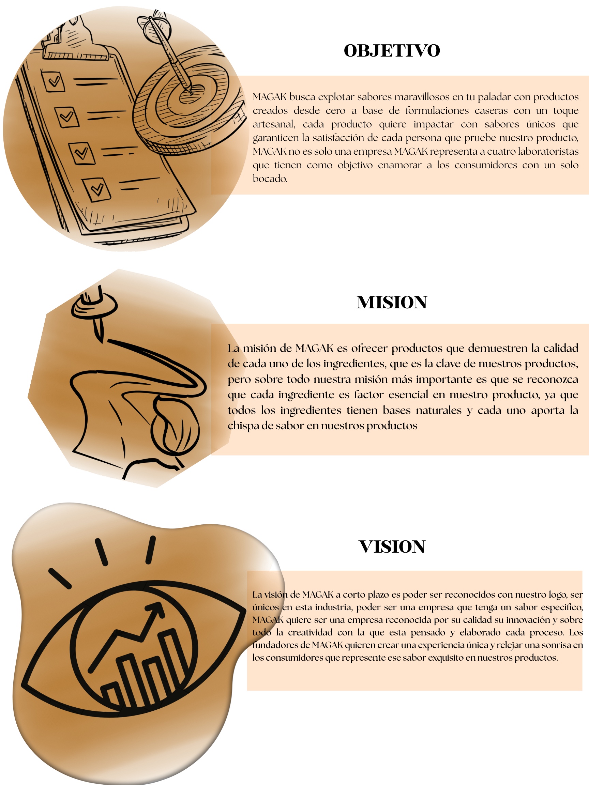

.png)
|
|---|
| "MAGAK DONDE LO ARTESANAL SE VUELVE IDENTIDAD" | |
|---|---|
 |
|
¿QUIENES SOMOS? |
|
Es una empresa que se enfoca en la creación de alimentos con base a lo artesanal, pero con un toque sofisticado, MAGAK es una empresa creada por laboratoristas que buscan impactar en el paladar de un público que busca la combinación de sabor, tradición y ciencia todo esto en un solo producto. Productos que harán despertar sabores intensos y únicos que fueron hechos de las manos de estudiantes que buscan analizar alimentos y bebidas desde un punto de vista de la creación. MAGAK proviene de los nombres de cada uno de los fundadores de esta empresa, nombre que ayudara a que cada producto sea reconocido como único, fundadores que tienen un mismo objetivo para el rumbo que toma su empresa que es que con cada producto se pueda ver como cada factor que más adelante será explicado es indispensable para la magia de cada producto |
|
|  | |
| VALORES | |
Hay valores que rigen a nuestra empresa, valores que aportan coda uno de los fundadores de este proyecto y con los cuales defendemos nuestros productos y sobre todo los principios que ponemos como persona, poniendo sobre todas las cosas empeño y sobre todo corazón, por que MAGAK tiene la disposición y los valores de cuatro laboratoristas comprometidos con su trabajo poniéndolo sobre todas las cosas. |
|
RESPONSABILIDAD Cumplimos con nuestros compromisos de manera puntual y profesional ya que somos responsables de hacer lo mejor trabajando día con día en mejorar nuestros productos.
|
RESPETO Valoramos a cada persona y promovemos un ambiente armonioso para que cada una de las personas sienta una sensación de confianza con nuestra compañía. |
HONESTIDAD Actuamos con transparencia en todas nuestras actividades. Buscamos generar confianza en nuestros consumidores haciendo que nos dejen sorprenderlos con nuestros sabores. |
CALIDAD Buscamos mejorar continuamente nuestros procesos y servicios. Nos enfocamos en cada detalle buscando siempre hacer cada proceso mil veces mejor que el anterior porque nuestros consumidore se merecen lo mejor. |
TRABAJO EN EQUIPO Colaboramos para alcanzar metas comunes, cada uno de estos laboratoristas tienen un mismo objetivo y ese es, hacer de MAGAK la mejor empresa de todas. |
||||
|---|---|---|---|---|---|---|---|---|
HISTORIA DE LA EMPRESA
|
||||||||